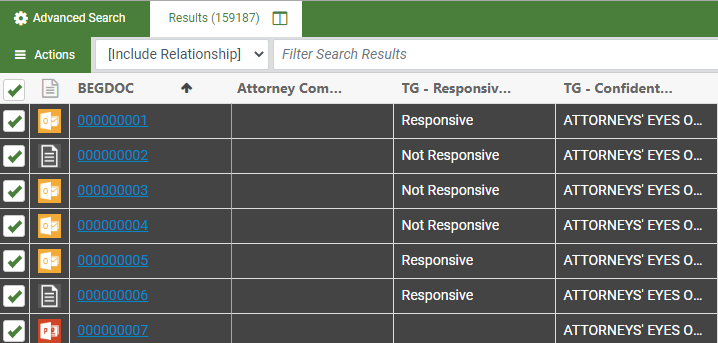
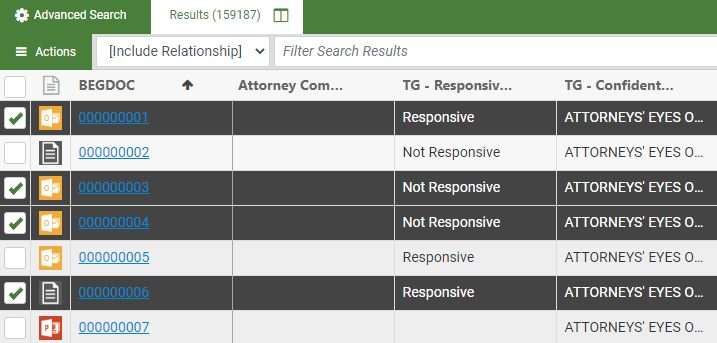

Use the following procedure to image one or more documents from the Results tab (see Work with Search Results) or the Work with Grid Columns.
-
All documents: To image all documents in the current document set:
-
Click the check box in the column heading row to select all the documents as shown in the following figure.

-
Skip to step 3.
-
-
Selected documents: To image selected documents:
-
Select the check boxes associated with any documents you would like to image, as shown in the following figure.

-
Continue with the next step.
-
-
Click
 in the mass action toolbar to display the menu.
in the mass action toolbar to display the menu. - Select Image.
-
A dialog box appears. Select required options.
Option
Description
Color Options
Select the method by which colors will be processed.
(Note: Color rendering is explained on many public websites. Refer to those resources if you want details on color settings.)
Use eCap project default
Use the color settings of the selected eCapture project.
Black and white (1 bit)
Renders as Group 4 TIFF
Grey scale (8 bit)
Renders as LZW TIFF
Color (8 bit)
Renders as LZW TIFF
True color (24 bit)
Renders a JPG
eCapture Project
Select the eCapture project to be used for the
Original File Name
Select the fields containing the Original File Name and Location, to be included in placeholder files for documents with no associated native files.
Original File Location
- Once all options have been defined, click Submit. A prompt appears indicating the documents were added to the Job Manager to be processed. For more information about the Job Manager, see Overview: Job Manager.